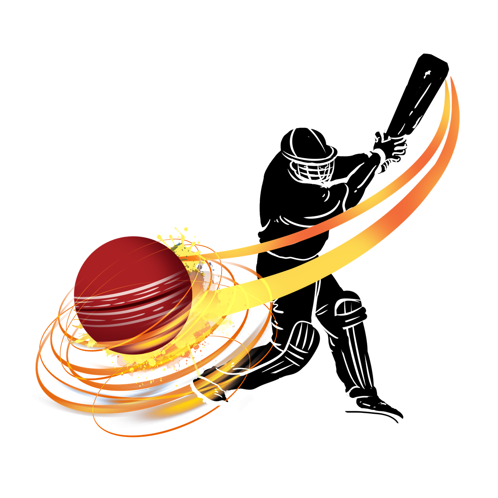
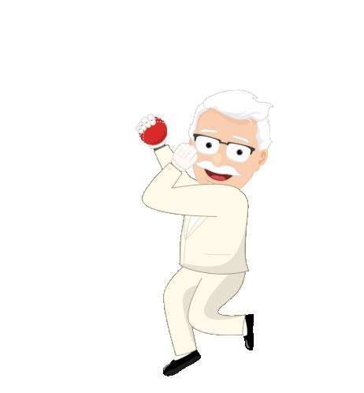

Hand Cricket Game🏏
Rules and Instructions
Welcome to the hand cricket game ,this is a simple and fun game where you need to score 50 runs to win the game , and it can be played by following the rules below.
- You can either click on the desired button or type your desired number in a range of 1-6 to score that many runs.
- And meanwhile computer also selects a number as its choice.
- If the choice of your's and computer's match then you are out from the game.
- As long as your choice is different from the choice of computer you can keep playing.
- After scoring 50 runs you will win the game!!
- Click on the start button below to start the game.

